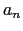

Next: Multichannel Acoustic Beamforming System Up: Multichannel Acoustic Beamforming for Previous: Meeting Room Microphone Array Contents
The filter-and-sum beamforming is one of the simplest beamforming techniques but still gives a very good performance. It is based on the fact that applying different phase weights to the input channels the main lobe of the directivity pattern can be steered to a desired location, where the acoustic input comes from. It differs from the simpler delay-and-sum beamformer in that an independent weight is applied to each of the channels before summing them.
Let us consider the hypothetical case of a microphone array
composed of  microphones, as seen in figure 5.1,
with identical frequency response and equal distance between any
two adjacent microphones, of value d meters. If only the
horizontal directivity pattern is considered (
)
and have microphones with equal amplitude weights
, the main lobe can be steered to the direction ' using
a basic delay-and-sum beamforming by applying the following phase
weights to the channels:
microphones, as seen in figure 5.1,
with identical frequency response and equal distance between any
two adjacent microphones, of value d meters. If only the
horizontal directivity pattern is considered (
)
and have microphones with equal amplitude weights
, the main lobe can be steered to the direction ' using
a basic delay-and-sum beamforming by applying the following phase
weights to the channels:
| (5.1) |
Thus obtaining the following directivity pattern:
| (5.2) |
where the term forces the main lobe to move to the direction .
Such steering can be applied in real applications by inserting time delays to the different microphone inputs. In this case the delay to be applied to each microphone to steer at angle is:
| (5.3) |
Each of the microphone inputs is delayed a time  and
then all signals are summed to obtain the delay-and-sum output, as
it can be seen in figure 5.2. The physical
interpretation when the waveform front is considered flat is that
and
then all signals are summed to obtain the delay-and-sum output, as
it can be seen in figure 5.2. The physical
interpretation when the waveform front is considered flat is that
 is the time that takes the same signal wave to reach
each of the microphones.
is the time that takes the same signal wave to reach
each of the microphones.
By using such time delays equivalence the delay-and-sum output can be written as
| (5.4) |
The basic delay-and-sum beamforming considers all channels to have an identical frequency response and then uses equal amplitude weights () to all channels. In the application for meetings it will be considered that microphones have different (and unknown) frequency responses. This problem can be addressed by adding a non-uniform amplitude weight and making both amplitude and phase weights frequency dependent. Therefore obtaining a filter-and-sum beamforming system output as
where is determined by eq. 2.31.
Figure 5.2 represents what is seen in equation
5.5. The input signal (considered to be coming from a
distant source and flat) arrives to each microphone from an angle
at a different time instant. The signals from the
different microphones are passed through a filter ,
independent for each microphone (1 through  ), which accounts
for an amplitude and time delay (as seen in eq. 5.5).
The output or ``enhanced'' signal is the sum of all filtered
individual signals.
), which accounts
for an amplitude and time delay (as seen in eq. 5.5).
The output or ``enhanced'' signal is the sum of all filtered
individual signals.
This type of beamforming technique was selected for the implementation of the meetings system because it agrees with all desired characteristics. Furthermore, its simplicity allows for a fast implementation, normally under real-time, that allows it to eventually be used in a real-time system.
user 2008-12-08